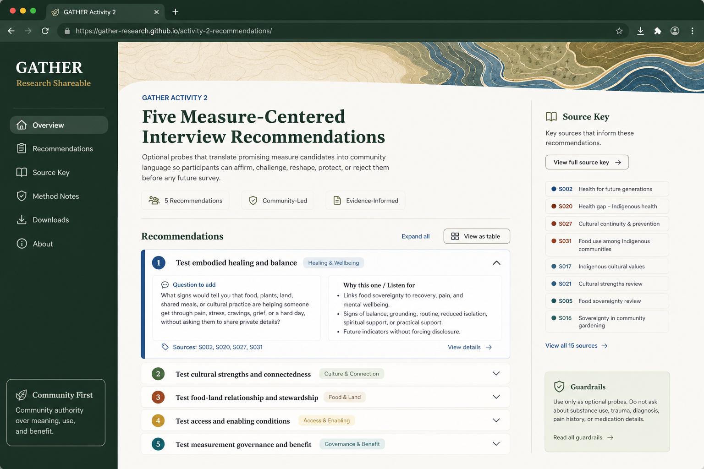

Grounding
What This Shareable Carries Forward
Primary Activity 2 question
Measurement filters
Question set
Five Prompts Worth Bringing Into Conversation
Citation key
Sources Used By These Five Recommendations
Facilitation boundaries
What Not To Add Yet
Design reference North-Star Website Mockup
